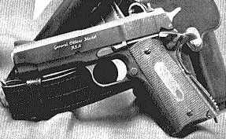

| Back to Eric's Home Page | Up to Site Map | $Date: 2002/07/31 08:18:18 $ |
 My personal arm is a Colt M1991A Officer's Model semiautomatic pistol, the small-frame six-shot 3-5/8"-barrel version of the classic .45 ACP design. It's small enough to conceal but has excellent stopping power. Mine has a matte-black Parkerized finish and Pachmayr wraparound diamond-scale grips (unlike the OM in the image, which has stock grips).
Aside from the grips the gun is completely stock. I took it to a buddy who's a gunsmith and FFL. He stripped it, gave it the professional eyeball, put it back together, and said ``It's perfect as is''. He was right, too. One day at the range I got a chance to swap guns for a few mags with a guy with the same style OM who'd gone the custom route; recoil rod, match bushing, custom trigger, the works. Fifty rounds later neither of us was sure we could see any performance difference at all.
I generally shoot plain-vanilla 230-grain copper-jacketed hardball at the range, but load blue-tip Glaser rounds for home defense. In case they fail to penetrate and I can't make a head shot, the last round in the mag is hardball.
I use Shooting Star 7-shot mags in preference to the factory Colt magazines, both to get the extra round of capacity and because they seem better made and more reliable.
For the range and tac-shooting, I wear my gun in a Bianchi Speed Scabbard. This is a minimalist molded-leather outside-the-belt holster designed for fast drawing. I use a different method for serious concealment, about which however I shall keep mum because there's a large class of criminals and gun-grabbers I'd rather keep guessing.
When not on my person, the Colt lives in a GunVault. These things are very nice and quite reliable provided you don't get the battery connector upside-down like I did first time!
| Back to Eric's Home Page | Up to Site Map | $Date: 2002/07/31 08:18:18 $ |